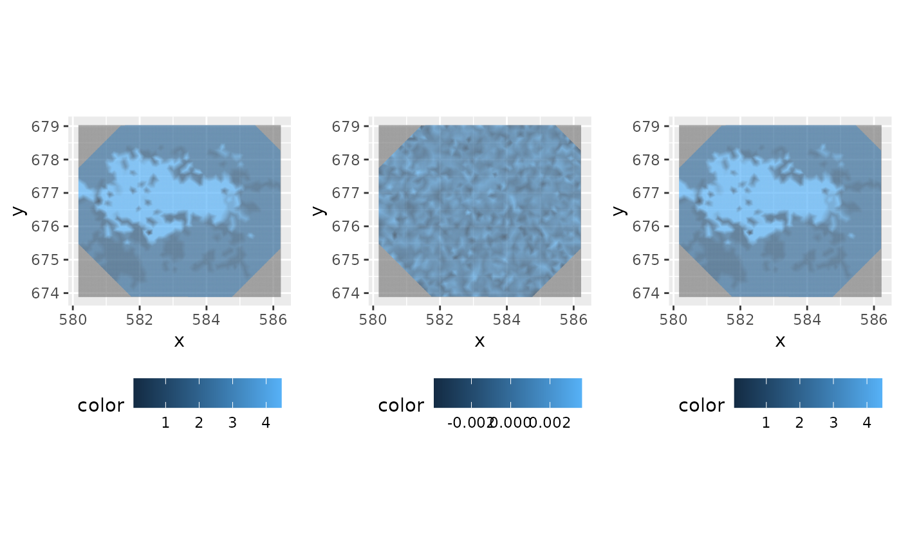
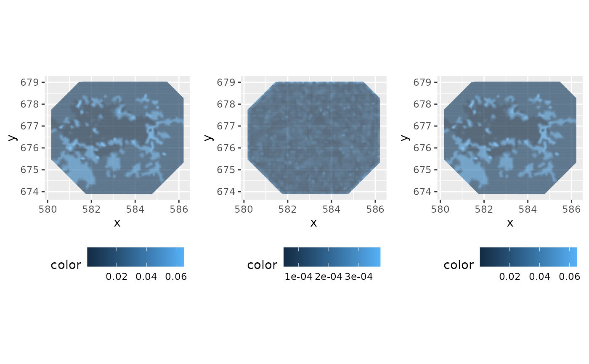
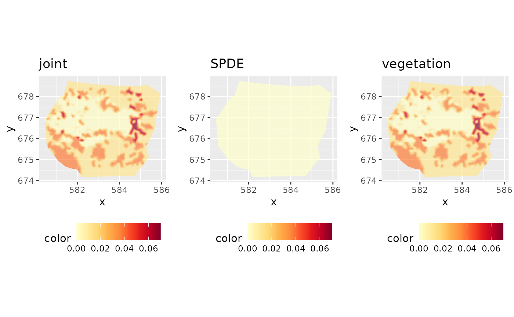

Calculates local and integrated variance and correlation measures as introduced by Yuan et al. (2017).
Arguments
- joint
A joint
predictionof two latent model components.- prediction1
A
predictionof the first component.- prediction2
A
predictionof the second component.- samplers
A SpatialPolygon object describing the area for which to compute the cumulative variance measure.
- mesh
The
inla.meshfor which the prediction was performed (required for cumulative Vmeasure).
References
Y. Yuan, F. E. Bachl, F. Lindgren, D. L. Brochers, J. B. Illian, S. T. Buckland, H. Rue, T. Gerrodette. 2017. Point process models for spatio-temporal distance sampling data from a large-scale survey of blue whales. https://arxiv.org/abs/1604.06013
Examples
# \donttest{
if (bru_safe_inla() &&
require(ggplot2, quietly = TRUE) &&
bru_safe_sp()) {
# Load Gorilla data
data("gorillas", package = "inlabru")
# Use RColorBrewer
library(RColorBrewer)
# Fit a model with two components:
# 1) A spatial smooth SPDE
# 2) A spatial covariate effect (vegetation)
pcmatern <- INLA::inla.spde2.pcmatern(gorillas$mesh,
prior.sigma = c(0.1, 0.01),
prior.range = c(0.01, 0.01)
)
cmp <- coordinates ~ vegetation(gorillas$gcov$vegetation, model = "factor_contrast") +
spde(coordinates, model = pcmatern) -
Intercept(1)
fit <- lgcp(cmp, gorillas$nests,
samplers = gorillas$boundary,
domain = list(coordinates = gorillas$mesh),
options = list(control.inla = list(int.strategy = "eb"))
)
# Predict SPDE and vegetation at the mesh vertex locations
vrt <- fm_vertices(gorillas$mesh, format = "sp")
pred <- predict(
fit,
vrt,
~ list(
joint = spde + vegetation,
field = spde,
veg = vegetation
)
)
# Plot component mean
multiplot(ggplot() +
gg(gorillas$mesh, color = pred$joint$mean) +
coord_equal() +
theme(legend.position = "bottom"),
ggplot() +
gg(gorillas$mesh, color = pred$field$mean) +
coord_equal() +
theme(legend.position = "bottom"),
ggplot() +
gg(gorillas$mesh, color = pred$veg$mean) +
coord_equal() +
theme(legend.position = "bottom"),
cols = 3
)
# Plot component variance
multiplot(ggplot() +
gg(gorillas$mesh, color = pred$joint$var) +
coord_equal() +
theme(legend.position = "bottom"),
ggplot() +
gg(gorillas$mesh, color = pred$field$var) +
coord_equal() +
theme(legend.position = "bottom"),
ggplot() +
gg(gorillas$mesh, color = pred$veg$var) +
coord_equal() +
theme(legend.position = "bottom"),
cols = 3
)
# Calculate variance and correlation measure
vm <- devel.cvmeasure(pred$joint, pred$field, pred$veg)
lprange <- range(vm$var.joint, vm$var1, vm$var2)
# Variance contribution of the components
csc <- scale_fill_gradientn(colours = brewer.pal(9, "YlOrRd"), limits = lprange)
boundary <- gorillas$boundary
plot.1 <- ggplot() +
gg(gorillas$mesh, color = vm$var.joint, mask = boundary) +
csc +
coord_equal() +
ggtitle("joint") +
theme(legend.position = "bottom")
plot.2 <- ggplot() +
gg(gorillas$mesh, color = vm$var1, mask = boundary) +
csc +
coord_equal() +
ggtitle("SPDE") +
theme(legend.position = "bottom")
plot.3 <- ggplot() +
gg(gorillas$mesh, color = vm$var2, mask = boundary) +
csc +
coord_equal() +
ggtitle("vegetation") +
theme(legend.position = "bottom")
multiplot(plot.1, plot.2, plot.3, cols = 3)
# Covariance of SPDE field and vegetation
ggplot() +
gg(gorillas$mesh, color = vm$cov)
# Correlation between field and vegetation
ggplot() +
gg(gorillas$mesh, color = vm$cor)
# Variance and correlation integrated over space
vm.int <- devel.cvmeasure(pred$joint, pred$field, pred$veg,
samplers = fm_int(gorillas$mesh, gorillas$boundary),
mesh = gorillas$mesh
)
vm.int
}



#> var.joint var1 var2 cor
#> 1 0.01774526 0.0001041284 0.01763764 0.001286139
# }